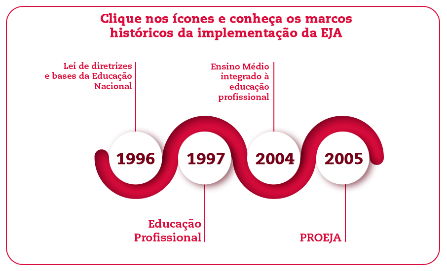
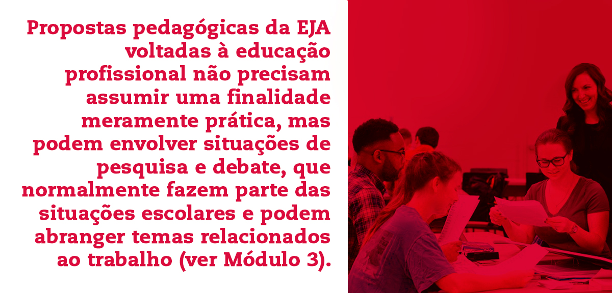
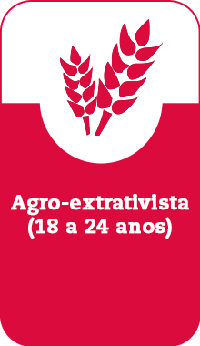
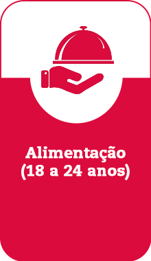
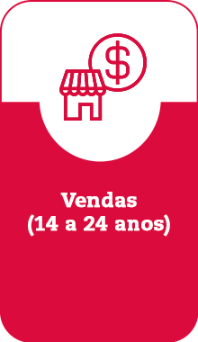
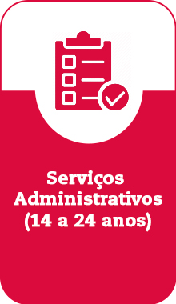

Módulos
Clique nos itens abaixo para visualizar os módulos.
Módulo 1 - Concepções de educação profissional
A articulação da EJA à Educação profissional tem uma história recente entre as propostas curriculares e políticas públicas em nosso país. Se, por um lado, a demora se deve ao lugar marginal ocupado pela EJA, por outro reflete o predomínio histórico da separação entre educação e trabalho. Ela deixou marcas sobre as concepções de educação profissional que chegaram aos dias de hoje.
O distanciamento entre educação e formação profissional tem heranças no Brasil Colonial, quando o trabalho, atividade pouco prestigiosa, era realizado por uma mão-de-obra escrava, que servia à elite. No início do século XX, esta divisão de classes transferiu-se à educação, configurando duas modalidades formativas: uma escola voltada às elites, que valorizava as atividades intelectuais, separada da formação para o trabalho, destinada às classes mais pobres da população.
Essa separação entre ações formativas para o saber e para o fazer foi acentuada pelas políticas educacionais brasileiras até o início deste século.
Mas, além da comparação entre os dados, quando olhamos para números como esses precisamos também nos perguntar: como essas desigualdades impactam as condições de vida das brasileiras? Que tipo de sonhos, expectativas ou realidades nossa sociedade permite que elas vivam? E quais lhes são tiradas? Quais os efeitos das desigualdades de gênero entre os homens? E como essas desigualdades ameaçam o direito à educação?


Apesar de medidas normativas e programáticas visando articulação entre formação geral e formação profissional, sua separação ainda marca o espírito de muitas propostas pedagógicas. A integração entre os dois propósitos formativos requer uma mudança de paradigma sobre aquilo que possa ser formação para o trabalho.
O dualismo histórico entre as modalidades formativas acabou por consolidar uma concepção de educação profissional restrita ao desenvolvimento de habilidades e competências que adequasse os sujeitos às demandas do mercado. Essa perspectiva mercantil da educação traz implícita uma ideia de ser humano: alguém reduzido à condição de recurso empregável ao mercado de trabalho.

Aqui, temos o propósito de pensar uma EJA em que a educação profissional não assuma um sentido exclusivamente utilitário. O emprego, evidentemente, faz parte da expectativa dos educandos e deve orientar as ações formativas. Acreditamos, porém, que o trabalho, para além da prática, deva ser considerado objeto do conhecimento, assim ingressando no mundo do saber.
É importante que o trabalho seja considerado em sua dimensão da ciência, da tecnologia, da cultura e da cidadania. Abre-se então a possibilidade do trabalhador situar-se historicamente, refletir sobre a natureza de sua participação social e reconhecer o trabalho como promotor de sua própria transformação. A educação profissional assume então seu compromisso com a formação integral dos sujeitos.
Essa mudança de concepção sobre a educação profissional é acompanhada por uma transformação do horizonte formativo. Deixamos de pensar o trabalho como exercício produtivo e passamos a pensá-lo como mote para o desenvolvimento da cidadania. É quando a formação profissional deixa de apenas mirar o mercado e lança luz sobre o mundo do trabalho.
Texto para discussão:
SAVIANI, Dermeval. Trabalho e educação: fundamentos ontológicos e históricos. Revista Brasileira de Educação. Rio de Janeiro, volume 12, número 34, pp. 152-180, jan/abr 2007.
O artigo faz uma retrospectiva histórica das relações entre educação e trabalho, mostrando sua separação por um longo período e as tentativas de reestabelecimento de vínculos no mundo contemporâneo.
Módulo 2 - A definição de um programa de formação
A diversidade do público da EJA e de contextos nos quais a oferta desse segmento é relevante desafia gestores e educadores a planejar projetos pedagógicos diferenciados e específicos, inclusive no que diz respeito aos modelos de integração com a Educação Profissional.
Um desses modelos é a EJA integrada à Educação Profissional. Nesse caso, os alunos cursam disciplinas da base comum e disciplinas voltadas à formação para o trabalho em uma determinada área ocupacional. Essa integração pode se dar por meio de duas propostas formativas, conforme a seguir.
a) Ensino fundamental e médio da EJA integrados à Formação Integral Continuada (EJA-FIC): oferece a base comum curricular e disciplinas de uma determinada área profissional, oferecendo uma certificação final.
b) Ensino Médio da EJA articulado à Educação Profissional Técnica de Nível Médio: também oferece a base comum curricular e as disciplinas do curso técnico em uma determinada área.
Outro modelo de integração da EJA com a Educação profissional é aquele em que o ensino fundamental e o médio assumem o trabalho como eixo condutor do currículo das disciplinas convencionais (ver Módulo 3). Nesse caso existe uma certificação da formação geral, mas não da habilitação profissional.
A definição de um programa de formação que integre os conhecimentos gerais com os específicos do mundo do trabalho deve ser criteriosa, considerando as características do público e o contexto em que vive.
Os cursos podem ser planejados tendo em vista as demandas, por exemplo, de populações da periferia de grandes centros urbanos, comunidades itinerantes, rurais, indígenas, quilombolas ou privadas de liberdade. Para cada caso deve-se pensar como a escola pode contribuir para o desenvolvimento da cidadania e a ampliação das oportunidades profissionais dos educandos.
A identificação das demandas formativas do público atendido pela escola precisa levar em conta sua trajetória profissional, as condições de trabalho que experimentam e seus projetos para o mundo do trabalho. Também é importante considerar a situação de desemprego e de procura de um primeiro emprego, como ocorre com os jovens que acedem à EJA.
O planejamento deve ainda compreender um estudo do desenvolvimento econômico local, buscando conhecer as condições de vida da população e a esfera do trabalho, o que inclui as atividades econômicas e a oferta de ocupações na região.
Dependendo do perfil dos sujeitos e das condições locais, o currículo pode oferecer itinerários formativos para determinados arcos profissionais. Eles consistem em conjuntos de ocupações que fazem parte de um mesmo setor da economia e possuem base técnica comum, podendo abranger as esferas da produção, da circulação de bens e da prestação de serviços. A formação por arcos profissionais inclui atividades teóricas e práticas, podendo contribuir para atender as “demandas de sobrevivência” de uma comunidade, pois amplia a gama de possibilidades de inserção ocupacional dos educandos como assalariados, autônomos ou em atividades da economia solidária.
Passe o mouse sobre os cards abaixo para conhecer mais sobre os arcos de atuação mais procuradas por estudantes de nível técnico e suas diferentes ocupações.

Agro-extrativista
(18 a 24 anos)
Ocupações
• Criador de pequenos animais (apicultura ou avicultura de corte ou avicultura de postura)
• Trabalhador em Cultivo regional (fruticultura, olericultura)
• Extrativista florestal de produtos regionais (madeira; alimentos silvestres; fibras, ceras e óleos; gomas e resinas) Artesão regional (cerâmica, bordados, madeira, palha e materiais orgânicos)
Mínimo - 1104 horas e Máximo - 1840 horas
Teoria: ≥ 552 horas e ≤ 920 horas
Prática: ≥ 552 horas e ≤ 1288 horas

Alimentação
(18 a 24 anos)
Ocupações
• Chapista
• Repositor de mercadorias (em supermercados)
• Cozinheiro auxiliar
• Vendedor ambulante (alimentação)
Mínimo - 1104 horas e Máximo - 1840 horas
Teoria: ≥ 552 horas e ≤ 920 horas
Prática: ≥ 552 horas e ≤ 1288 horas

Vendas
(14 a 24 anos)
Ocupações
• Assistente de Vendas
• Vendedor em Comércio Varejista
• Agente de Vendas de Serviços
• Designer de Vitrines
Mínimo - 1104 horas e Máximo - 1840 horas
Teoria: ≥ 552 horas e ≤ 920 horas
Prática: ≥ 552 horas e ≤ 1288 horas

Serviços Administrativos
(14 a 24 anos)
Ocupações
• Auxiliar de escritório
• Assistente Administrativo
• Auxiliar de Pessoal
• Auxiliar de Almoxarifado
• Recepcionista
Mínimo - 1104 horas e Máximo - 1840 horas
Teoria: ≥ 552 horas e ≤ 920 horas
Prática: ≥ 552 horas e ≤ 1288 horas
Conheça a lista completa de arcos profissionais
Aperte o play e escute o áudio sobre...
Como outro exemplo, podemos supor uma escola frequentada por muitos estudantes que sejam trabalhadores da construção civil. Nesse caso, o currículo poderia reservar espaço para o trabalho com medidas, técnicas de edificações empregadas historicamente e os movimentos artísticos aos quais estão relacionadas, direitos da categoria, história da organização sindical e saúde do trabalhador.
O passo seguinte à definição do programa de formação que se pretende ofertar é a elaboração de um currículo que integre a formação profissional às ações educativas. Essa construção deve ser um ato colaborativo e permanente entre os docentes, visando planejar ações que articulem as diferentes disciplinas sob o principio da formação humana integral.
AÇÃO EDUCATIVA - AGUARDANDO VIDEO PARA INSERIR AQUI
Módulo 3 - O trabalho no currículo da EJA
No modelo da EJA integrada à Educação Profissional, espera-se que a articulação entre a formação geral e a formação para o trabalho não se resuma à justaposição das disciplinas convencionais e específicas na grade curricular. Um currículo verdadeiramente integrado pressupõe que os professores da base comum aproximem-se da temática do trabalho por meio, por exemplo, dos eixos da ciência, da tecnologia, da cultura e da cidadania. O mesmo se espera em cursos do ensino fundamental e médio de EJA que, ainda que não integrados à Educação Profissional, tenham a formação para o trabalho como um de seus objetivos.
Nesses casos, as áreas de Linguagens, Matemática, Ciências Humanas e da Natureza e das Ciências Humanas podem tratar o trabalho como tema transversal. Trata-se, afinal, de uma temática que está presente em diferentes campos do conhecimento, não existindo uma área que pudesse ser suficiente para abordá-la. Para além da habilitação técnica, a formação profissional deve atravessar diferentes disciplinas, integrando-as em torno do trabalho como objeto do conhecimento.
Sugerir que um curso de Língua Portuguesa ou Matemática tome o trabalho como tema transversal não é propor que o professor ou a professora, em certo momento, interrompam a programação de suas disciplinas. A transversalidade pressupõe que um tema, como o trabalho, seja abordado simultaneamente ao desenvolvimento dos objetivos das disciplinas.
Atividades orientadas ao desenvolvimento da leitura, da escrita ou da oralidade podem, por exemplo, abordar temáticas como emprego e condições de trabalho; atividades que envolvam habilidades matemáticas como interpretação de grandezas numéricas e leitura de gráficos podem propiciar a compreensão do mercado de trabalho; os direitos do trabalhador podem ser o fio condutor das aulas de História, enquanto o letramento científico pode ser estimulado por meio de pesquisas sobre novas tecnologias.
Práticas pedagógicas no campo das Artes Plásticas podem promover a apreciação de obras que retratam trabalhadores em diferentes contextos históricos e sociais. Atividades assim planejadas podem contribuir para a formação estética dos educandos, ao mesmo tempo em que podem apoiar a reflexão e o debate sobre diversos elementos relacionados ao mundo do trabalho.
Esses exemplos mencionam objetivos que, na escola, costumam fazer parte do currículo das disciplinas convencionais. Ao serem postos em comunicação com a temática do trabalho, tais objetivos podem ultrapassar uma finalidade meramente escolar e assumir um sentido social.
AÇÃO EDUCATIVA - AGUARDANDO VIDEO PARA INSERIR AQUI
Embora a educação profissional em uma EJA voltada à formação humana não se limite à capacitação para o mercado, seria de se estranhar uma proposta de integração que não qualificasse o trabalhador para o acesso a novas ocupações e condições de renda. Nesse sentido, a escola também pode planejar ações voltadas ao emprego, como a pesquisa de vagas, a escrita do currículo e a participação em entrevistas de emprego. Sabemos que situações escolares de natureza mais pragmática costumam estar entre as expectativas dos educandos. Ainda assim, mesmo a questão do emprego pode ganhar abordagens que considerem as novas formas de organização do trabalho, os processos produtivos como um todo e os agentes sociais que dele participam.
Fica claro que a educação profissional pode ir além do desenvolvimento de competências que promovam a inclusão no mercado de trabalho. Ela pode contribuir para que os educandos reconheçam o trabalho como um fazer humano e, portanto, sua condição de como sujeitos históricos, produtores de cultura e cidadãos. Para isso, é preciso ter em vista que o direito dos educandos ao trabalho corresponde ao direito ao conhecimento sobre o mundo do trabalho.
É preciso considerar que a aproximação entre as disciplinas e a transversalidade não depende apenas de cada um dos educadores, mas precisam ser produzidas em equipe e podem beneficiar-se de ações formativas do corpo docente da escola. Somente então é possível construir um currículo de educação profissional minimamente capaz de estimular a formação integral.
Sugestões de leitura:
SILVA, Mônica Ribeiro da. A política de integração curricular no âmbito do PROEJA: entre discursos, sujeitos e práticas. Ensaio: Avaliação e Políticas Públicas em Educação. Rio de Janeiro, v. 19, n. 71, p. 307-326, abr./jun. 2011.
O artigo analisa a construção de um currículo visando a integração entre educação geral e profissional no contexto de implantação do PROEJA no Estado do Paraná. Independente do contexto, as observações e relatos de campo apresentados pelo artigo são valiosos para pensar as diversas formas de integração curricular em torno do trabalho como princípio educativo.
Módulo 4 - Eixos norteadores para o planejamento
Feitas algumas considerações sobre o currículo (Módulo 3), podemos nos aproximar do planejamento de aulas do ensino fundamental e médio da EJA que contribuam para a formação profissional dos educandos. A preocupação aqui não é a de eleger temas, que variam de acordo com o perfil do alunado, mas de sugerir estratégias didáticas voltadas ao desenvolvimento de linguagens e atitudes altamente valorizadas pelo modo como o trabalho se organiza nos dias de hoje. Elas podem tomar parte em disciplinas da formação geral e específica para o trabalho.
A maioria dos jovens e adultos volta à escola trazendo uma visão de mundo vinculada à condição de trabalhadores. Ela funda saberes, práticas e valores que devem ter espaço no processo formativo: revelam a realidade e as necessidades dos educandos, orientam o planejamento e, postos em diálogo, instauram condições para a construção da identidade do grupo como um coletivo de trabalhadores.
O exercício narrativo sobre o vivido e a escuta do outro são capazes de gerar novas constatações e conhecimentos sobre a realidade, o que, na pedagogia de Paulo Freire, é condição para transformá-la. A formação de sujeitos críticos requer a investigação da realidade e, com ela, a superação do saber da pura experiência por um conhecimento organizado, tipicamente formal e letrado.
Vale lembrar que ensinar não é transferir conhecimentos, mas criar condições para sua produção. Embora aulas expositivas tenham seu valor, o papel formativo da educação profissional se esvazia quando predominam situações baseadas na transmissão de conceitos e procedimentos a alunos passivos, geralmente convidados a realizar exercícios que mais solicitam a memória e o automatismo de certas práticas do que a reflexão, a indagação, o debate e a decisão.
Onde está o link para a situação-problema?AÇÃO EDUCATIVA - AGUARDANDO VIDEO PARA INSERIR AQUI
Uma situação-problema não é uma situação previsível, que possa ser realizada com instrumentos imediatamente acessíveis ao aluno, mas consiste em uma tarefa cuja realização promove aprendizagem.
Outra estratégia didática relevante para a formação profissional é o trabalho em pequenos grupos. Esse tipo de organização, frequente em muitas escolas, valoriza o diálogo e, por esta razão, favorece a aprendizagem frente a diversas atividades. Ocorre que a capacidade para o trabalho em grupo costuma ser tomada como pressuposto para a realização das atividades, sem que seja, ela mesma, considerada objeto de trabalho pedagógico.
As mudanças na organização do trabalho ocorridas nas últimas décadas deram ênfase ao trabalho colaborativo, lembrando-nos, uma vez mais, que trabalhar em grupo não significa justapor alunos e alunas, mas criar condições para a reflexão sobre o modo como cada um toma parte nas relações interpessoais.

Atividades em pequenos grupos, que envolvam apresentações orais planejadas, apoiadas por slides, envolvem o planejamento de sequências didáticas capazes de desenvolver habilidades e atitudes altamente valorizadas pelo mundo do trabalho nos dias de hoje.
No campo das linguagens, podemos destacar a importância de colocar os alunos frente a diferentes situações comunicativas, nas quais tenham a oportunidade de aproximar-se de gêneros textuais importantes no mundo do trabalho. A produção escrita de e-mails, cartas de apresentação, relatórios e slides eletrônicos pode apoiar a aprendizagem da linguagem formal, ao passo que apresentações orais planejadas abrem espaço à discussão sobre a postura adequada a esse tipo de situação.
Vale, finalmente, considerar a presença da tecnologia no cotidiano em geral e, especificamente, seu lugar no mundo do trabalho. Nesta medida, a escola também pode contribuir para o desenvolvimento do letramento digital dos alunos, valorizando a aprendizagem do uso de softwares (para edição de textos, apresentações e planilhas) e da internet em práticas sociais nas quais eles são recursos de comunicação e informação.
Acreditamos que uma proposta pedagógica que ofereça lugar ao diálogo entre educandos e educadores, inclusive em atividades que solicitem a colaboração e a comunicação entre pares, tenha o potencial de fazer com que a formação para o trabalho deixe de ser um projeto individual para tornar-se mote para o desenvolvimento pessoal e a socialização.
Sugestões de leitura:
SILVA, Mônica Ribeiro da. A política de integração curricular no âmbito do PROEJA: entre discursos, sujeitos e práticas. Ensaio: Avaliação e Políticas Públicas em Educação. Rio de Janeiro, v. 19, n. 71, p. 307-326, abr./jun. 2011.
O artigo analisa a construção de um currículo visando a integração entre educação geral e profissional no contexto de implantação do PROEJA no Estado do Paraná. Independente do contexto, as observações e relatos de campo apresentados pelo artigo são valiosos para pensar as diversas formas de integração curricular em torno do trabalho como princípio educativo.